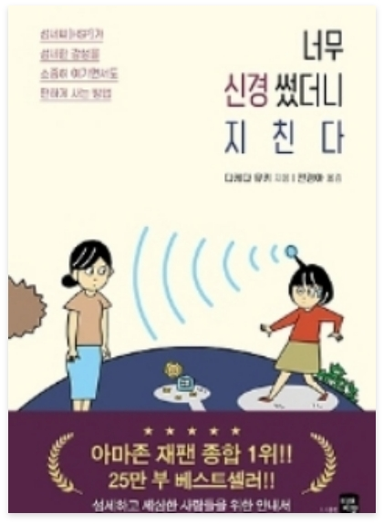

♡
너무 신경썼더니 지친다
-
저자 | 다케다유키
출판사 | 미래지향
출판년도 | 2020.08.11
일본 아마존 종합 1위!! 25만 부 돌파!! 사소한 것이 신경쓰이고 피곤한 사람들에게 HSP 전문상담사가 알려주는 '초실천기술집'! HSP란 미국의 심리학자 일레인 아론 박사가 최초로 제창한 'HIGHLY SENSITIVE PERSON'에서 유래하였다. 우리나라에선 '너무 민감한 사람', '매우 예민한 사람' 등으로 번역되고 있다. 이 책은 '섬세하여 스트레스를 잘 받는 사람이 섬세한 감성을 소중히 여기면서도 편하게 사는 방법'에 관한 HSP 전문상담가의 '실천' -
저자소개
일본에서 몇 없는 HSP(HIGHLY SENSITIVE PERSON, 메우 예민한 사람) 전문카운슬러. 작가 본인도 HSP다. 규슈대학 공학부 기계항공학과를 졸업하고 대기업에 들어가 연구개발을 하다 분석력과 HSP 기질을 살려 카운슬러로 독립했다. 이후 전국의 HSP로부터 밀려드는 상담에 응대하며 실적을 쌓았다. 이를 토대로 HSP 특유의 인간관계 및 행복하게 활약할 수 있는 일을 주제로 연구해왔다. HSP의 마음을 보듬어주는 세심한 카운슬링과 HSP를 대상으로 꼭 맞는 직업을 찾아준다는 평이 널리 퍼지면서 일본 -
출판사 서평
이 책은 '섬세하여 스트레스를 잘 받는 사람이 섬세한 감성을 소중히 여기면서도 편하게 사는 방법'에 관한 HSP 전문상담가의 실전 안내서이다. 이 책은 일본 아마존 종합 1위는 물론, 출간 후 2년이 지났지만 독자들의 입소문으로 차트 역주행을 하며 여전히 아마존 베스트셀러 상위권을 차지하고 있다. 저자는 이렇게 인간관계부터 라이프스타일까지 다양한 고민을 가진 세심한 사람들을 상담해 오면서 그들이 섬세한 감성을 소중히 여기면서도 충분히 인생을 행복하게 살 수 있다는 점을 공통적으로 발견했다.
 자세히
자세히
해당 도서는 독서퀴즈 서비스가
제공되지 않습니다.
-
피치못할피치:D2020.09.06.부자가 되기 위해 사소한 습관부터 하나씩 고쳐봐야겠다는 생각이 들었고, 저를 한 번 되돌아볼 수 있는 시간이 되어 좋았습니다^^#존리 #존리의부자되는습관 #부자를꿈꾼다 #부자되기_도전! #로또당첨
-
자두자두졸령2020.09.04.부자되고싶다아아아아아 요즘 티비에 자주 보이시는 존리님! 궁금해서 읽어봤는데, 너무 재밌었어요~#존리 #부자 #독서 #책읽기습관 #저축
-
아네모네세모네2020.09.01.괜히 베스트셀러가 아니네요! 재밌는데 제가 과연 지킬 수 있을지 ㅠ_ㅠ#부자되는법 #부자되는습관 #존리 #책추천